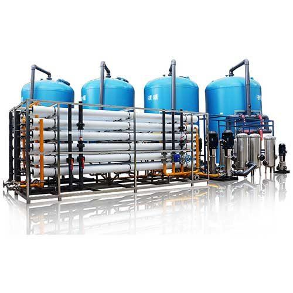

Bahan kimia water treatment berkualitas tinggi: antiscalant, biocide, CIP chemicals, pH adjustment, dan koagulan untuk berbagai aplikasi sistem pengolahan air.

Kimia water treatment yang tepat adalah penentu umur dan performa sistem RO Anda. PT Tirta Sumber Makmur menyediakan rangkaian lengkap kimia water treatment industri: antiscalant, biocide, CIP (Clean-in-Place) cleaner, koagulan, flokulan, pH adjuster, dan dechlorinator — semuanya dengan dokumentasi MSDS, certificate of analysis (CoA), dan rekomendasi dosis spesifik untuk aplikasi Anda.
TSM tidak menjual kimia generic — kami merekomendasikan formula yang sudah teruji untuk kondisi air Indonesia: hardness tinggi air sumur Jawa, silika tinggi air permukaan Sumatra, organik tinggi air gambut Kalimantan, hingga fouling biologis tinggi air laut tropis. Pelanggan kami mencakup PT Sosro, APP, Pelindo, hingga fasilitas farmasi bersertifikat CPOB yang membutuhkan dokumentasi kimia food-grade dan pharma-grade.
Setiap masalah air membutuhkan solusi kimia yang berbeda. Berikut kategori utama kimia water treatment yang TSM suplai:
| Antiscalant | Liquid / Powder, dosing 2–5 ppm |
| Biocide | Non-oksidatif, kompatibel membran |
| CIP Acid | pH 2–3, menghilangkan scaling mineral |
| CIP Alkaline | pH 11–12, menghilangkan fouling organik |
| pH Adjustment | H2SO4, NaOH, CO2 food grade |
| Packaging | Jerigen 20L, Drum 200L, IBC 1000L |
Yang membedakan TSM dari supplier kimia generic adalah pendekatan engineering bukan sekadar perdagangan:
Antiscalant Custom untuk Air Sumur Hardness Tinggi — Pabrik di Karawang dengan hardness air baku 600 ppm dan silika 80 ppm sebelumnya mengalami scaling membran setiap 6 bulan. TSM merekomendasikan antiscalant berbasis fosfonat dengan dosis 4 mg/L. Setelah 18 bulan, tidak ada scaling signifikan dan recovery sistem stabil di 75%.
CIP Recovery di PT Sosro — Sistem RO Sosro mengalami penurunan recovery dari 75% ke 58% akibat fouling organik dari air baku PDAM yang berfluktuasi musiman. CIP dengan alkali + EDTA + biocide oleh tim TSM mengembalikan recovery ke 73% — vs alternatif penggantian membran yang biayanya 5x lebih besar.
Pilihan tergantung pada ion yang menjadi kendala scaling. Untuk CaCO₃ dominan: antiscalant fosfonat. Untuk silika tinggi: antiscalant khusus silica-stabilizer. Untuk recovery sangat tinggi (>80%): blended antiscalant. TSM menggunakan software simulasi (ROSA, IMSDesign, Toray DS3) untuk menentukan formula tepat.
Ya, untuk klien makanan-minuman dan farmasi, TSM menyediakan kimia bersertifikat NSF/ANSI 60 (drinking water) atau food-grade dari produsen yang sudah teregistrasi. Sertifikat lengkap diserahkan dengan setiap pengiriman.
Untuk RO industri 100 m³/hari, biaya kimia rata-rata Rp 8–15 juta per bulan: antiscalant 60%, biocide 20%, CIP chemicals 15%, lainnya 5%. Variasi tergantung kualitas air baku — semakin sulit, semakin mahal.
Bisa. Banyak klien yang sistem RO-nya bukan dari TSM tetap membeli kimia dari kami karena kualitas dan dukungan teknis. Kami tetap memberikan konsultasi dosing berdasarkan analisis air dan parameter sistem yang Anda berikan.
Ya. Untuk pelanggan dengan kebutuhan rutin, TSM menawarkan kontrak suplai 1–3 tahun dengan harga tetap, jaminan stok, dan delivery scheduled. Termasuk monitoring kinerja kimia dan penyesuaian formula jika kondisi air berubah.
Kimia water treatment yang tepat menentukan apakah sistem RO Anda akan beroperasi optimal selama 7 tahun atau bermasalah dalam 7 bulan. Konsultasikan analisis air baku dan kebutuhan kimia Anda dengan tim TSM untuk mendapatkan rekomendasi formula yang akurat dan harga distributor.
Tim engineer kami siap membantu Anda menentukan spesifikasi yang tepat sesuai kebutuhan.